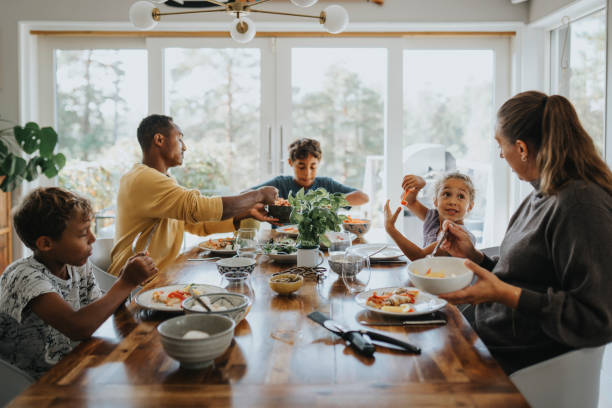

A nossa proposta é permitir com que pessoas de baixa renda possam variar as refeições diárias e consigam aproveitar os alimentos ao máximo. Dessa forma é possível que com os alimentos do dia a dia consigam ter acesso a preparações diversificadas e mais saudáveis.
Ler mais